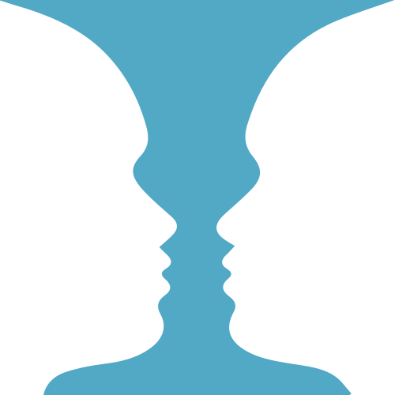
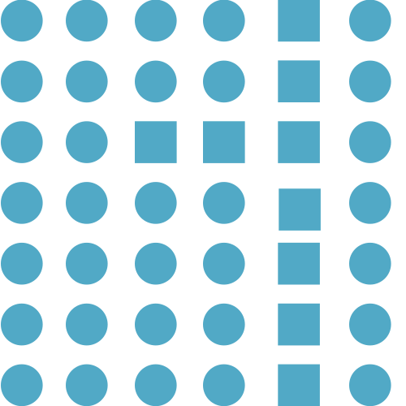
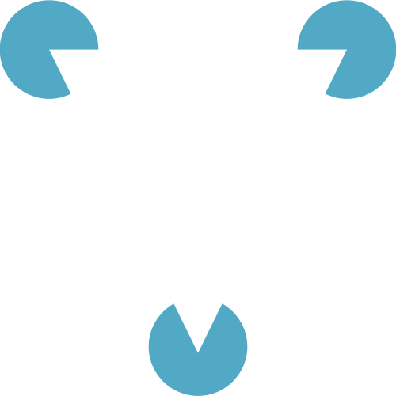
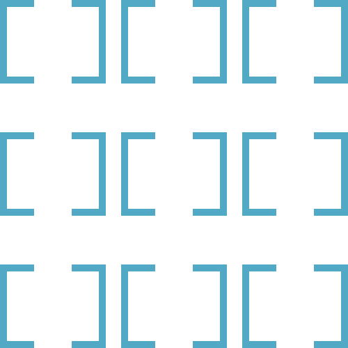
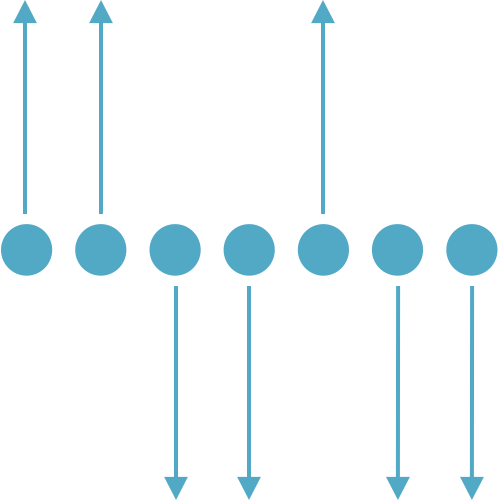
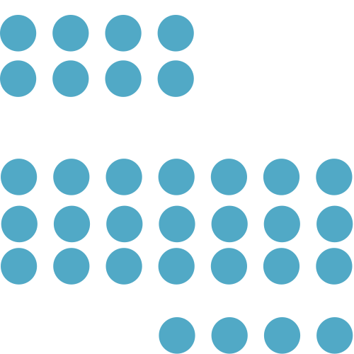
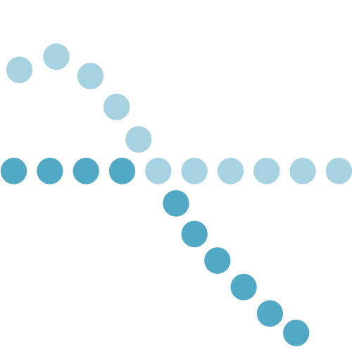

People will organize elements into the simplest pattern.
People perceive shapes as either the part in focus (the figure) or the background (the ground).
Visual elements that are similar, such as shape, size and color, are perceived as related.
When looking at a complex arrangement, we tend to look for one recognizable pattern.
We see objects as symmetrical shapes that form around a center point.
Elements that change at the same time, or in the same direction, are seen as a group.
Items that are close together are seen as a group.
Items that form a straight line are seen as a group.
At times, people see visual perceptions and organize based on past experience.